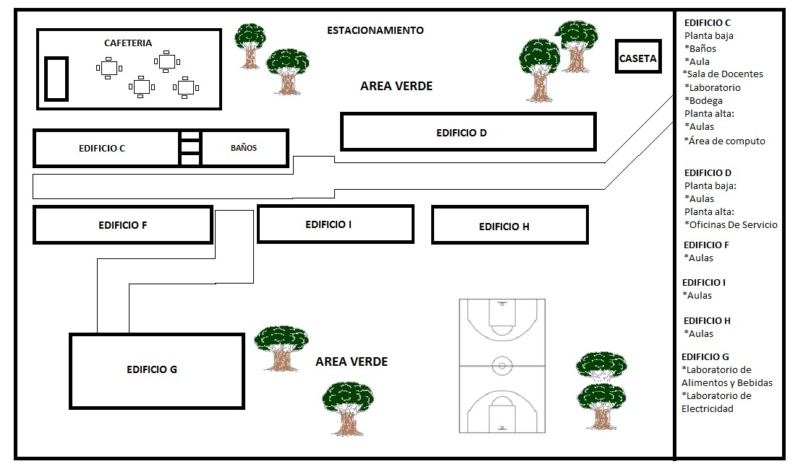

¡Bienvenidos al portal del CBtis 191!
El C.B.T.i.s. No. 191 “Nicolas Bravo” cuenta con un Diseño Institucional dirigido al cumplimento de las metas planteadas, alineadas a los indicadores de gestión de la Dirección General de Educación Tecnológica Industrial (DGETI), a las metas de la Subsecretaría de Educación Media Superior (SEMS) de la Secretaría de Educación Pública (SEP) y al Plan Nacional de Desarrollo (PND) 2019-2024.
Misión
Formar de manera integral Bachilleres con opción de una carrera técnica en las especialidades
de Administración de Recursos Humanos, Programación, Electricidad y Alimentos y Bebidas
dentro del Sistema Nacional de Bachillerato que proporciona pertinencia y relevancia en
planes y programas de estudio, así como libre tránsito entre subsistemas y escuelas.
Teniendo como ejes rectores el Marco Curricular basado en competencias, la definición y regulación de
las modalidades de oferta, los mecanismos de gestión como son la formación y actualización
de la planta docente, la generación de espacios de orientación educativa y atención a las
necesidades de los alumnos, la definición de estándares aplicables a instalaciones y
equipamiento, la profesionalización de la gestión escolar, la evaluación con la mejora continua
así como la certificación complementaria del Sistema Nacional del Bachillerato; que permitirá
formar jóvenes con desarrollo humano sustentable basado en valores y responsabilidad social
hacia su comunidad y País.
Visión
Ser una institución de Educación Media Superior certificada, orientada al aprendizaje y desarrollo de conocimientos tecnológicos y humanísticos fundamentada en la cultura de la corresponsabilidad y la prevención.
Plano

Especialidades
El C.B.T.i.s. No. 191 “Nicolas Bravo” cuenta con las siguientes carreras a cursar:

PROGRAMACIÓN
La carrera de técnico en programación ofrece las competencias profesionales que permiten al estudiante realizar actividades dirigidas a analizar, diseñar, desarrollar, instalar y mantener software de aplicación tomando como base los requerimientos del usuario.

PREPARACIÓN DE ALIMENTOS Y BEBIDAS
Esta carrera se desarrolla como una vertiente de los servicios turísticos. Se debe preparar al alumno para la continuación de sus estudios de nivel superior en áreas disciplinarias relacionadas y refuerza sus actitudes de auto estudio, así como sus valores de honestidad, responsabilidad, respeto, cooperación, comunicación y compromiso con la sociedad.
Talleres
Los alumnos de nuestra institución tienen como opción algunas de las actividades extraescolares y talleres:

VOLEIBOL
En el caso de este deporte, el voleibol, la justificación de la iniciación viene acompañada de otros condicionantes como son el desarrollo de las habilidades motrices básicas, complejas, y condición física .

AJEDREZ
El ajedrez no sólo desarrolla, como casi es evidente y conocido, el pensamiento lógico y la habilidad espacial, así como la atención y concentración, sino que mucho de su potencial está también en la forma cómo se aprende y cómo se guie durante el proceso de su adquisición o dominio.